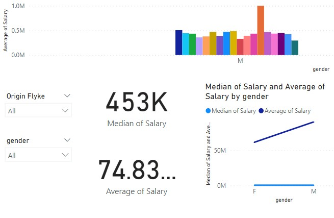
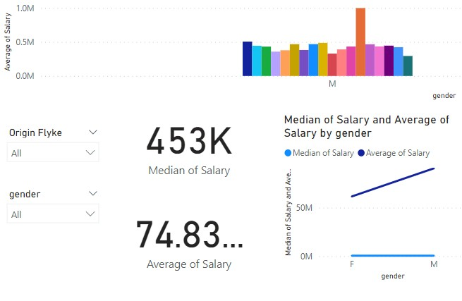

- YIFEI TANG
- Analytics Consultant
Collect, process, analyse and present data - from supporting every day business decisions to fuelling global change.


I am YIFEI TANG, a consulting data analyst and social researcher passionate about working with organisations that want to make effective use of their data; from the first ideas around what you want to measure and how to capture data accurately, through data preparation, analysis and management, all the way to impactful presentation of insights. I can support each step of the process to enable your organisation in making evidence-driven decisions or share insights with new audiences. I also offer training in Tableau, Alteryx, CommCare, Research Methods and Data Literacy.
I am available for short-term freelancing projects or on longer-term consulting contracts.
A sample of my client work and personal projects

 



Contact E-mail: sweetflyer237@gmail.com
Opening hours: Mon-fri 09:00-15:00
Send me a message and I'll get back to you as soon as possible